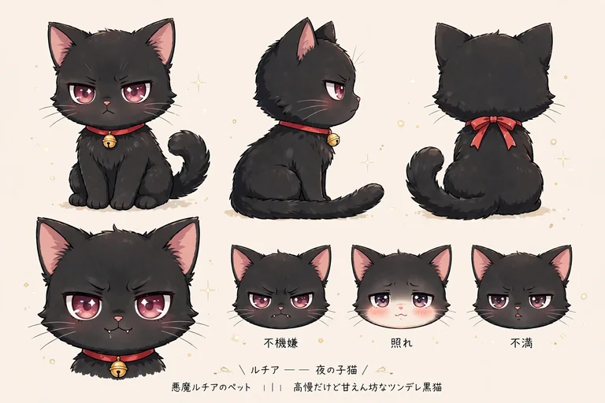

セラフィナ
見習い天使セラフィナのプロフィール。22歳、金髪ウェーブと空色の瞳、白×金のドレスに水色リボン。約500年ぶりに大阪・日本橋へ降臨した主人公の性格・口癖・物語を…
見習い天使セラフィナと、その仲間たちの紹介です。相棒の子猫モコ、ライバルの見習い悪魔ルチアと黒猫ノワール、先輩天使ガブリエラ、後輩のフィオレッタと伝書鳩ピッポ、そして日本橋のフィギュア店員・二宮ゆかり。それぞれのページで、プロフィールと登場するイラストパックを紹介しています。
見習い天使セラフィナのプロフィール。22歳、金髪ウェーブと空色の瞳、白×金のドレスに水色リボン。約500年ぶりに大阪・日本橋へ降臨した主人公の性格・口癖・物語を…

セラフィナの相棒モコのプロフィール。翼のある白い子猫で、水色のリボンと空色の瞳が特徴。甘えん坊な性格と、セラフィナとの関係、登場パックを紹介。…

見習い悪魔ルチアのプロフィール。黒髪ツインテールと赤紫の瞳、黒×赤のゴシックドレス。セラフィナを堕落させる任務と、裏目に出る作戦の数々、ペットの黒猫ノワールを紹…

ルチアのペット、黒猫ノワールのプロフィール。真っ黒な短毛に赤紫の瞳、赤いリボンと金の鈴の首輪。高慢でツンデレ、でも甘えん坊な性格と登場パックを紹介。…

先輩天使ガブリエラのプロフィール。銀髪ロングと翠の瞳、大きな白い翼の上級天使。セラフィナの指導役として視察に訪れ、少しずつ日本に染まっていく姿を紹介。…

後輩の見習い天使フィオレッタのプロフィール。蜂蜜色ショートボブと緑の瞳、傾いた輪が特徴。セラフィナに憧れる元気な後輩と、相棒の伝書鳩ピッポ、第11弾での活躍を紹…

二宮ゆかりのプロフィール。26歳、日本橋のフィギュア店の店員で初の人間レギュラー。茶色ポニーテールに黒縁眼鏡、紺エプロン。オタク文化の案内人にして、癒される側で…

フィオレッタの相棒ピッポのプロフィール。白い伝書鳩で、天界からの手紙や小物を運ぶ。第11弾『後輩降臨編』の始まりを告げた存在と、作中での役割を紹介。…